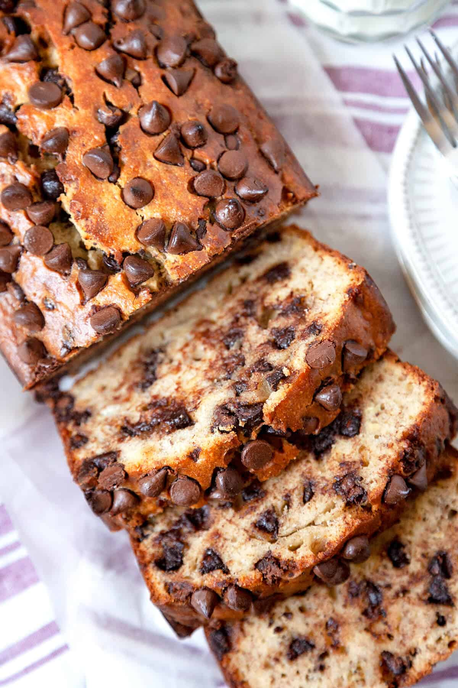

Banana Bread
Home

Delicious Chocolate Chip Banana Bread.
Ingredients
- 1/2 cup of butter
- 1/4 cup sugar
- 2 ripe bananas
- 2 eggs
- 1 1/2 cups flour
- 1 teaspoon baking soda
- 1/2 teaspoon salt
- 1 teaspoon vanilla extract
- 1 cup chocolate chips
Steps
- Preheat oven to 350℉
- Thoroughly coat the inside bottom and sides of a baking pan.
-
Add butter and sugar to a large mixing bowl. Mix together thoroughly.
-
Add bananas, break the bananas down to an apple sauce like consistency.
- Add eggs, thoroughly mix everything thats been added so far.
-
Add flour, baking soda, and salt. Mix in slowly to avoid mess until a
dough is formed.
- Add vanilla, mix well.
- Add chips, mix thoroughly into the dough.
- Bake for 55mins.
- Let sit for 10mins. Enjoy!